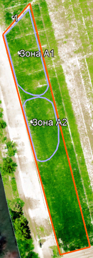
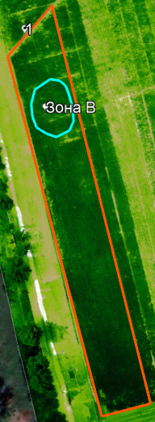

Фаза вегетации: R3, R4 (конец цветения, образование бобов)
Площадь поля: 0,39 Га
| Однолетнее | Многолетнее | Деревья | |
|---|---|---|---|
| Этап вегетации | посадка | ||
| прорастание | всходы | сокодвижение | |
| набухание почек - начало бутонизации | набухание почек - начало бутонизации | набухание почек - начало бутонизации | |
| бутонизация | бутонизация | бутонизация | |
| начало цветения | начало цветения | начало цветения | |
| массовое цветение | массовое цветение | массовое цветение | |
| начало плодоношения | начало плодоношения | начало плодоношения | |
| массовое плодоношение - конец вегетации | массовое плодоношение - конец вегетации | массовое плодоношение - конец вегетации | |
| сбор урожая | сбор урожая | сбор урожая |
1. В северной части поля (Рис.1) культура не развивается, и местами погибла, проблемная площадь составляет около 0,02 Га или 5% от площади поля (Зона А1, А2). Это связано с особенностями состава почвы в соответствующих местах, а также с механическим воздействием на данные участки поля – прохождение наземной техники.
2. В северной части поля (Рис.2) на площади 0,01 Га или 2,5% от площади поля наблюдается дефицит азота 10-15% от нормы (Зона В).
3. На всей площади поля неравномерная нехватка калия и фосфора.
4. На поле присутствуют единичные сорные растения, которые не влияют на развитие сои.
5. При анализе результатов воздушного мониторинга выявлено, что посевы находятся в хорошем состоянии, в фенологической фазе, соответствующей сорту и дате посева, болезней и вредителей обнаружено не было.
Рекомендации:
1. Необходима внекорневая подкормка 3% -м раствором мочевины в период с 15- 22 июля.
2. До сбора урожая не проводить мероприятий по внесению калия, фосфора, азота и средств по борьбе с сорняками.
3. После сбора урожая провести мониторинг поля для составления карты дифференцированного внесения удобрений для подготовки почвы к следующему посеву.
Процент разницы между минимальным и максимальным количеством внесенных веществ будет составлять около 15%.
4. Рекомендуемая дата сбора урожая: 13-15 августа.
|  |  |